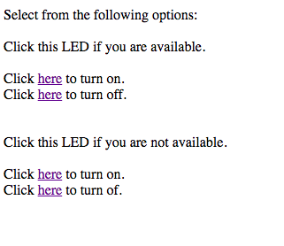

The purpose of this week was to make a board controllable via the internet. I used my local network to set up a server for my Huzzah, and then edited the options on the website to control two LEDs to signify whether available or not.
/*
WiFi Web Server LED Blink
A simple web server that lets you blink an LED via the web.
This sketch will print the IP address of your WiFi Shield (once connected)
to the Serial monitor. From there, you can open that address in a web browser
to turn on and off the LED on pin 5.
If the IP address of your shield is yourAddress:
http://yourAddress/H turns the LED on
http://yourAddress/L turns it off
This example is written for a network using WPA encryption. For
WEP or WPA, change the Wifi.begin() call accordingly.
Circuit:
* WiFi shield attached
* LED attached to pin 5
created for arduino 25 Nov 2012
by Tom Igoe
ported for sparkfun esp32
31.01.2017 by Jan Hendrik Berlin
*/
#include
const char* ssid = "NETGEAR70";
const char* password = "modernprairie679";
WiFiServer server(80);
void setup()
{
Serial.begin(115200);
pinMode(5, OUTPUT); // set the LED pin mode
pinMode(21, OUTPUT); // set the TONE pin mode
delay(10);
// We start by connecting to a WiFi network
Serial.println();
Serial.println();
Serial.print("Connecting to ");
Serial.println(ssid);
WiFi.begin(ssid, password);
while (WiFi.status() != WL_CONNECTED) {
delay(500);
Serial.print(".");
}
Serial.println("");
Serial.println("WiFi connected.");
Serial.println("IP address: ");
Serial.println(WiFi.localIP());
server.begin();
}
int value = 0;
void loop(){
WiFiClient client = server.available(); // listen for incoming clients
if (client) { // if you get a client,
Serial.println("New Client."); // print a message out the serial port
String currentLine = ""; // make a String to hold incoming data from the client
while (client.connected()) { // loop while the client's connected
if (client.available()) { // if there's bytes to read from the client,
char c = client.read(); // read a byte, then
Serial.write(c); // print it out the serial monitor
if (c == '\n') { // if the byte is a newline character
// if the current line is blank, you got two newline characters in a row.
// that's the end of the client HTTP request, so send a response:
if (currentLine.length() == 0) {
// HTTP headers always start with a response code (e.g. HTTP/1.1 200 OK)
// and a content-type so the client knows what's coming, then a blank line:
client.println("HTTP/1.1 200 OK");
client.println("Content-type:text/html");
client.println();
// the content of the HTTP response follows the header:
client.print("Select from the following options:");
client.print("Click this LED if you are available.");
client.print("Click here to turn on.");
client.print("Click here to turn off.");
client.print("Click this LED if you are not available.");
client.print("Click here to turn on.");
client.print("Click here to turn of.");
// The HTTP response ends with another blank line:
client.println();
// break out of the while loop:
break;
} else { // if you got a newline, then clear currentLine:
currentLine = "";
}
} else if (c != '\r') { // if you got anything else but a carriage return character,
currentLine += c; // add it to the end of the currentLine
}
// Check to see if the client request was "GET /H" or "GET /L":
if (currentLine.endsWith("GET /H")) {
digitalWrite(5, HIGH); // GET /H turns the LED on
}
if (currentLine.endsWith("GET /L")) {
digitalWrite(5, LOW); // GET /L turns the LED off
}
if (currentLine.endsWith("GET /T")) {
digitalWrite(21, HIGH); // GET /T turns the tone off
}
if (currentLine.endsWith("GET /O")) {
digitalWrite(21, LOW); // GET /O turns the tone off
}
}
}
// close the connection:
client.stop();
Serial.println("Client Disconnected.");
}
}
This is what the webpage looks like.
